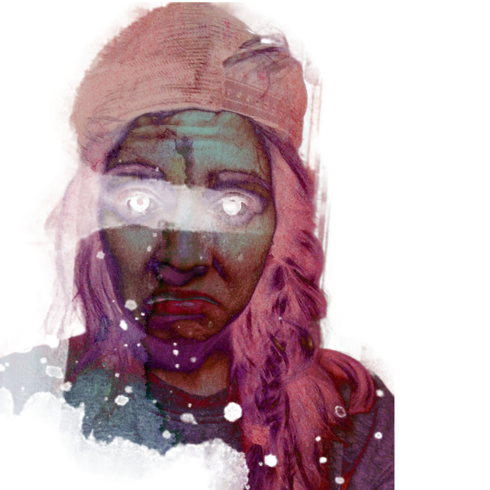

About Me
I hiccup at least once a day, but other than that, I'm creative, I work hard, and learn fast. I graduated from the Savannah College of Art and Design in 2016 with a B.F.A. in Illustration. Painting digitally is one of my passions.I paint a whole lot for myself and for others on the side.I am slowly, yet surely working on starting my own side freelance art business. I got into coding while working as a sales/marketing intern for a developer, and then I started teaching myself HTML and CSS.
Outside of learning coding and painting I love to run, hang out with friends, laugh often, drink coffee, and find new music to listen to.